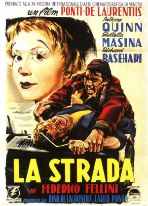

La Strada

Género
Drama | Neorrealismo | Teatro | Road Movie
Sinopsis
Cuando Zampanó, un artista ambulante, enviuda, compra a Gelsomina, la hermana de su mujer, sin que la madre de la chica oponga la menor resistencia. Pese al carácter violento y agresivo de Zampanó, la muchacha se siente atraída por el estilo de vida nómada, siempre en la calle (la "strada", en italiano), sobre todo cuando su dueño la incluye en el espectáculo. Aunque varios de los pintorescos personajes que va conociendo en su deambular le proponen que se una a ellos, Gelsomina se mantendrá fiel a Zampanó hasta las últimas consecuencias.